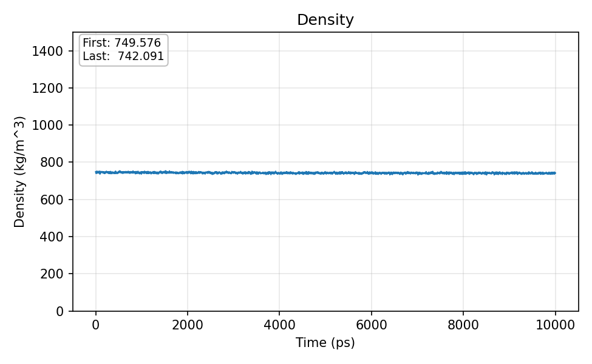

Flagship Project
Polymer-Filler MD And Flame-Retardant Molecular Modeling
GROMACS polypropylene and brucite interface analysis with coated versus uncoated contact and interaction-energy summaries.
1. Overview
Built and analyzed molecular simulation workflows for polypropylene and brucite filler interfaces, with related flame-retardant molecular modeling assets.
2. Scientific and Technical Problem
Surface treatment can alter polymer-filler compatibility. The modeling question was how coating changes direct polymer-brucite contact and the interaction pattern at the interface.
3. Dataset Or System
- Polypropylene and brucite interface simulations.
- Coated and uncoated filler-surface models.
- Contact-count and interaction-energy summaries.
- Density and visual-check artifacts.
4. Methods
GROMACS molecular dynamics, atomistic and coarse-grained workflow assets where available, contact analysis, short-range interaction-energy summaries, density checks, shell scripts, and SLURM-oriented workflow management.
5. Validation Strategy
Compared coated and uncoated contact and energy summaries; used density outputs and visual checks as simulation sanity checks; interpreted results as force-field-dependent computational evidence.
6. Key Results
Available contact and interaction-energy summaries support the interpretation that surface coating reduced direct PP-brucite contact and shifted interaction toward the stearic-acid layer.
7. Figures


8. Limitations
- Force-field-dependent computational model.
- Not standalone property prediction.
- Does not replace experimental characterization.
- Conclusions depend on model setup, parameter choices, and sampling.
9. Reproducibility
The public portfolio includes summary metrics, a final report, a small reproduction command, and a recruiter notebook. Full MD reproduction may require GROMACS, force-field files, trajectories, large storage, and HPC resources.
10. What This Demonstrates
Connection between molecular simulation setup, analysis scripts, aggregate metrics, scientific interpretation, and clear materials-facing limitations.